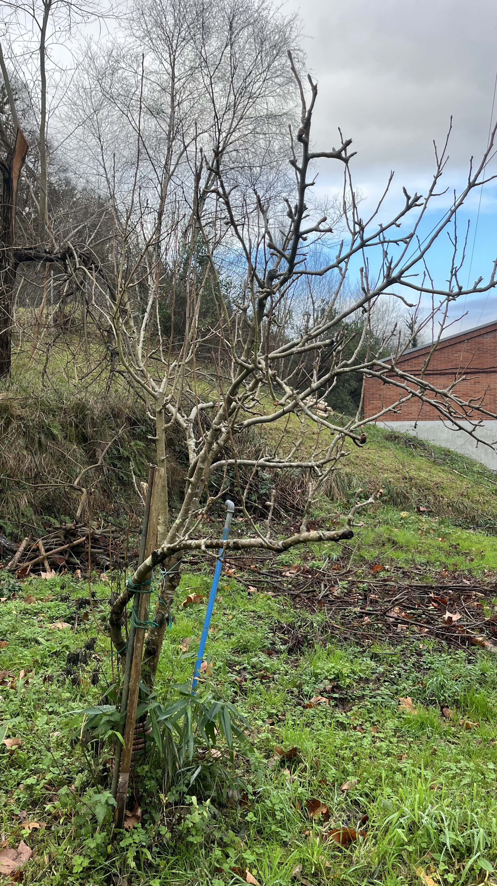
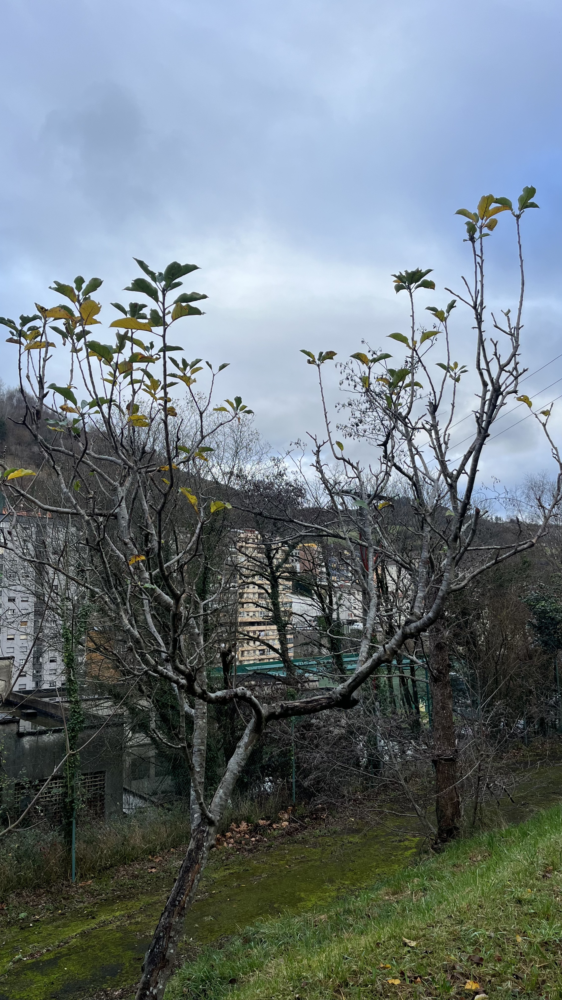
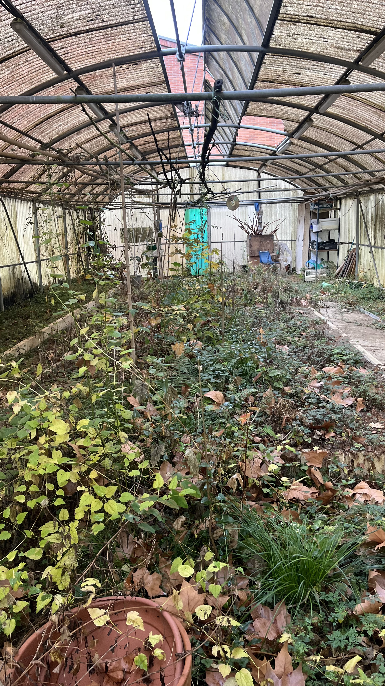
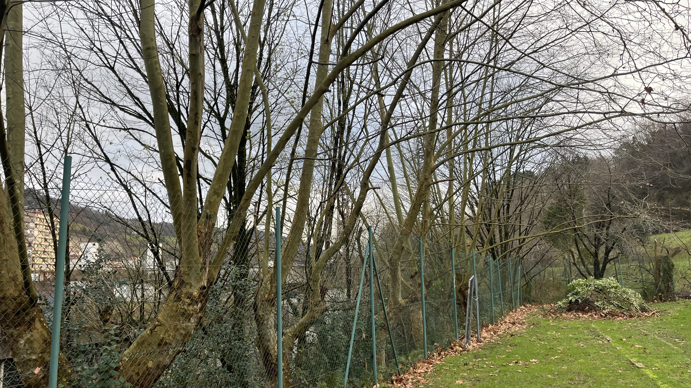
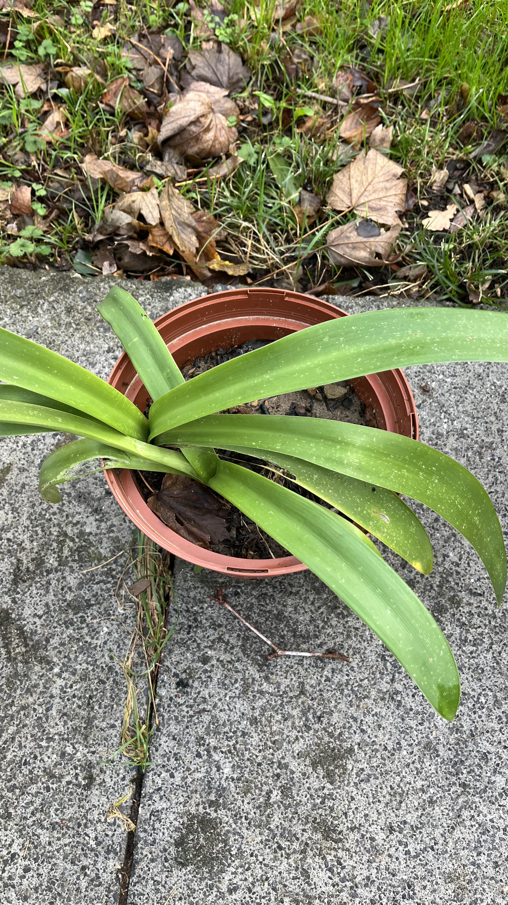

Zure Ekintza Garai-a
Hau dira gure komunitateko ohiturak aldatzeko gakoak. Txikiz hasi, mundua alda! 🔄
Ikusi Irudiak| Izena | Deskribapena | Irudia |
|---|---|---|
| Ficus carica (Higuera) | Zuhaitz hosto lauso eta zabala da, gehienetan beroa eta lehorra den klima nahi duena. Fruitu gozo eta haragitsua ematen du, higuina deitua, eta hostoak handiak eta sakabanatuak dira. Ohiko landare Mediterraneoko paisaian aurkitzen da. |
 |
| Alnus incana Moench (Aliso gris) | Zuhaitz hosto erorkorrekoa da, normalean 10–20 metro inguruko altuera duena. Azala grisa eta finxatuta dago, eta hostoak biribileko triangelu-formakoak dira. Errizoma bidez hedatzen da eta hezeguneetan eta ibaiertzetan ohikoa da. Fruitu txiki eta kaskarrak ditu, eta udazkenean hostoak erortzen dira. |
 |
| Rubus (Blackberry) | Sustrai sendoak eta adar lizuna dituen belarra da, normalean espinoak dituena. Hostoak hiru edo bost zatitan banatutako hosto konposatuak dira. Udako amaieran fruitu beltza eta gozoak ematen ditu, kontsumorako eta marmeladetarako egokiak. Mendietan eta baso ertzetan ohikoa da. |
 |
| Acer (Maple) | Zuhaitz hosto erorkorreko edo urte osoko hostodun landarea da, normalean hosto zabal eta lobuladoak dituena, eta udan kolore berde biziak eta udazkenean gorri, laranja edo horixka bihurtzen direnak. Fruitu hegaldunak (samuak) ematen ditu, haizeak eraman ditzakeenak. Basoetan, parkeetan eta hiri inguruneetan ohikoa da. |
 |
| Amaryllis belladonna (Beladona-bastarda) | Landare bulboso bat da, hosto urriko eta zabalak dituena, normalean udazkenean ateratzen diren lore ikusgarri handi, morezko edo arrosa kolorekoak ematen dituena. Klima epel eta lehorretan hazten da, eta loreak usain atsegina dauka. Normalean lorezaintza edo apaingarri gisa lantzen da. |
 |
| Ceratostigma plumbaginoides Bunge (Falso plumbago) | Landare perenne eta lodi-buztangarria da, hosto berde eta luzeak dituena, udazkenean gorri eta laranja koloreko bihurtzen direnak. Udako amaieran lore txiki, urdin-beltzak ematen ditu. Normalean lorategietan apaingarri gisa erabiltzen da eta lurzoru oneko eta eguzkitsua gustatzen zaio. |